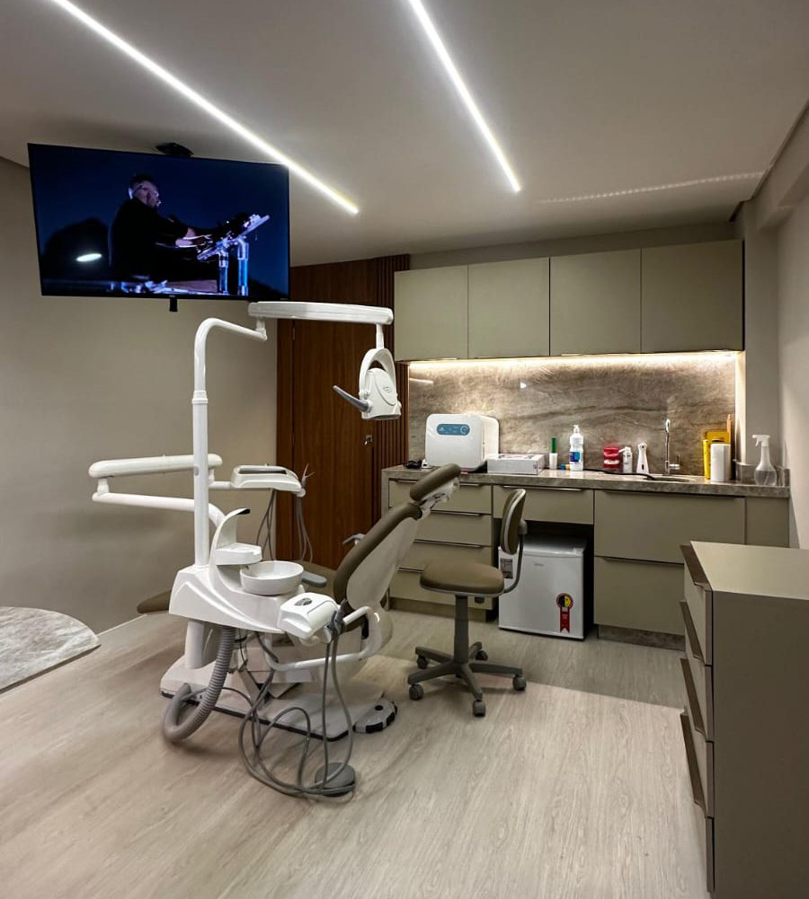
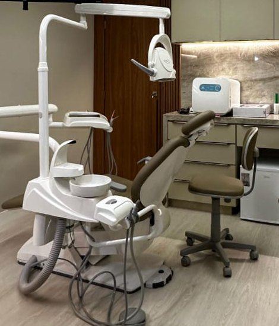

Avaliação e prevenção
Consulta de avaliação, limpeza e orientação para o cuidado em casa.
a confirmar
Nota 4,6 no Google em mais de mil avaliações de pacientes. Na Av. Senador Salgado Filho, de segunda a sexta, das 8h às 18h.
Foto da ficha da clínica no Google Maps · a confirmar
Mais de mil pessoas já avaliaram a Clínica Alian no Google. O que aparece nas avaliações é atenção desde a recepção, um ambiente descrito como charmoso e acolhedor, e o mesmo cuidado com as crianças.
lista ilustrativa Os tratamentos e especialidades da clínica ainda vão ser confirmados. Nada aqui é promessa de resultado.
Consulta de avaliação, limpeza e orientação para o cuidado em casa.
a confirmarTratamento de cáries e recuperação de dentes desgastados ou quebrados.
a confirmarPais contam nas avaliações que levam os filhos à clínica. Faixa etária e especialidade a confirmar.
citado em avaliação · a confirmarClareamento dental com indicação e acompanhamento profissional.
a confirmarAparelhos e alinhadores para corrigir a posição dos dentes.
a confirmarReposição de dentes perdidos, com planejamento feito na avaliação.
a confirmar4,6
1.020 avaliações na ficha da clínica no Google Maps (outubro de 2026). Abaixo, três delas, como foram escritas.
“O atendimento da Dra. Gabriela Gondim, sem dúvidas é um dos mais humanizados que já tive! Excelente profissional, recomendo de olhos fechados! Ambiente charmoso e acolhedor!”
“Atendimento excelente, já começa pela recepcionista Marcele que é maravilhosa, levei minha filha de 5 anos, super indico a clínica realmente atendimento humanizado.”
“A Dra. Gabriela é uma profissional excepcional! Desde o primeiro contato, foi extremamente atenciosa e solícita […] Seu atendimento é humanizado, cuidadoso e acolhedor, sempre buscando o melhor para o paciente.”
Pelo WhatsApp +55 84 98814-1411. A clínica atende de segunda a sexta, das 8h às 18h.
Há avaliações de pais que levaram os filhos, como a da Milena, que foi com a filha de 5 anos. faixa etária a confirmar
Av. Senador Salgado Filho, 1718, salas 604 e 605 — Lagoa Nova, Natal/RN, CEP 59022-000.
Pela ficha do Google, não: o atendimento é de segunda a sexta, das 8h às 18h.
a confirmar Informação ainda não confirmada com a clínica.